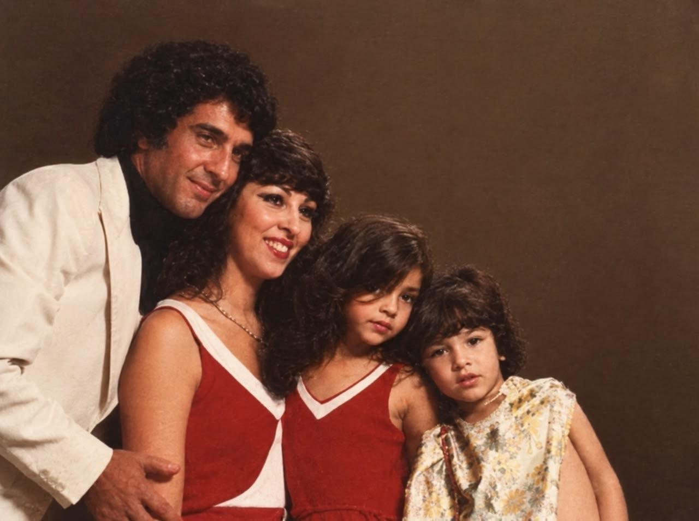
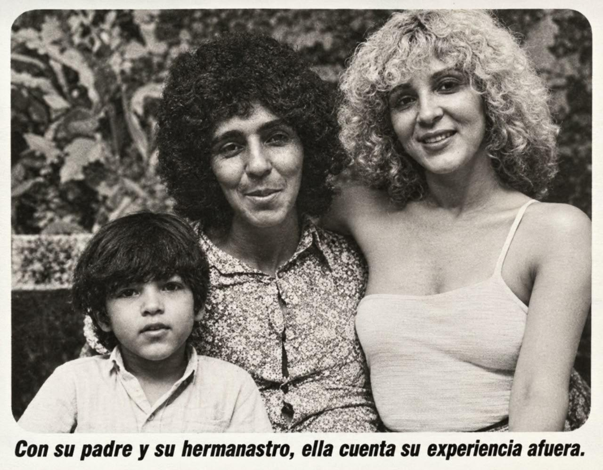
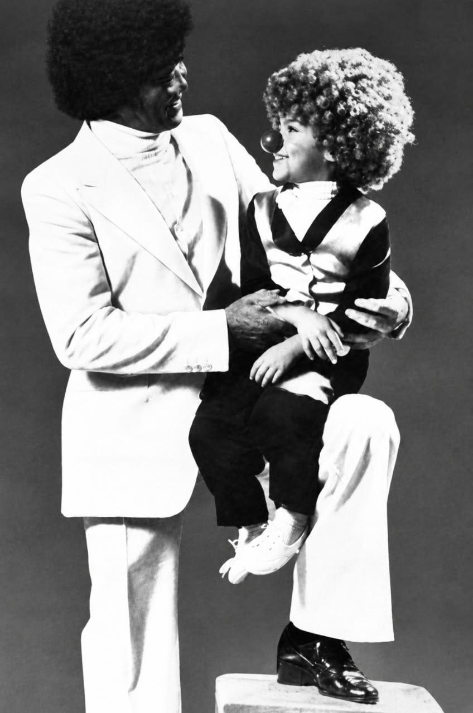
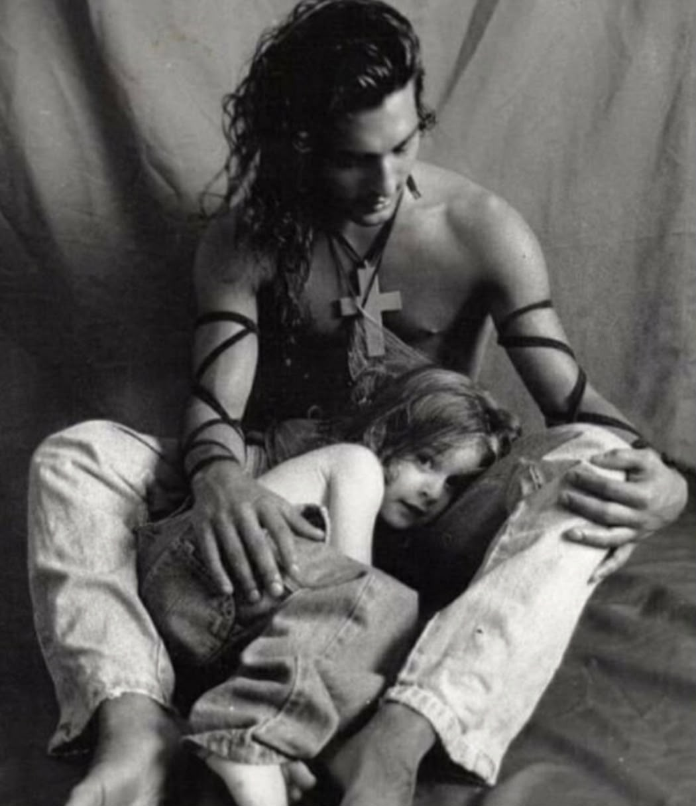
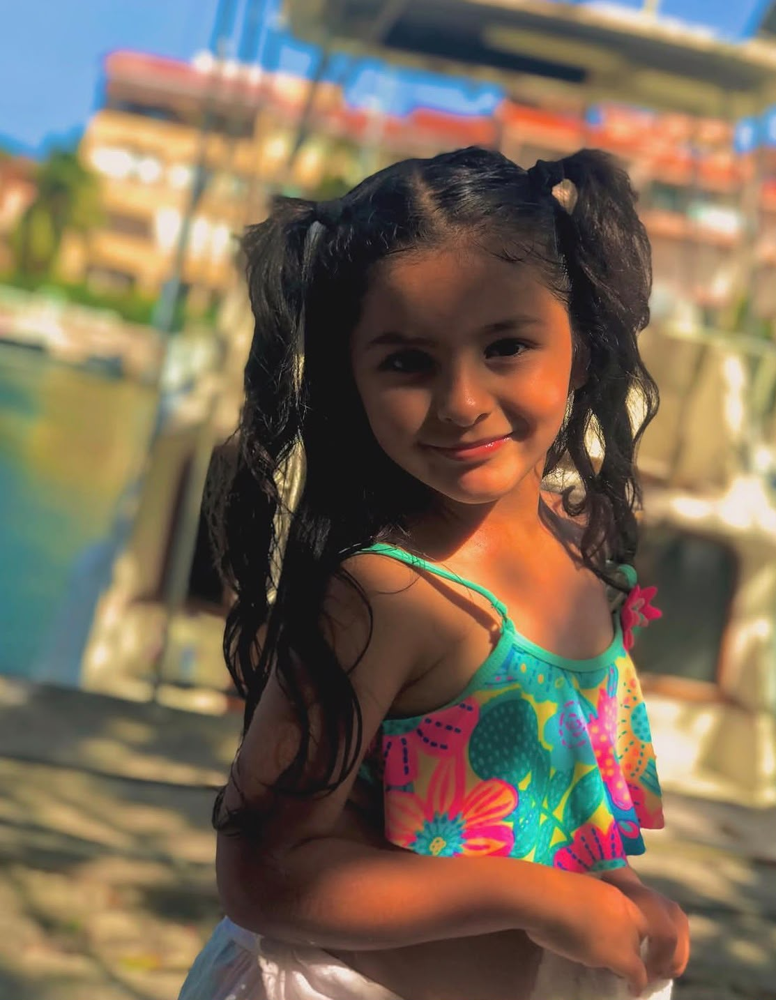
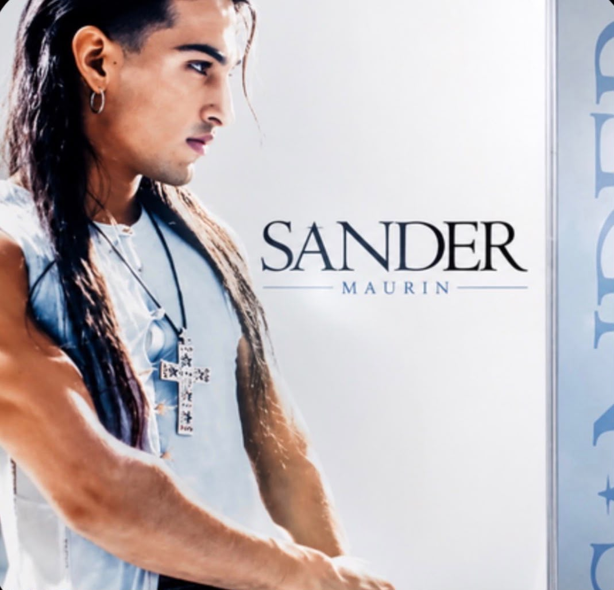
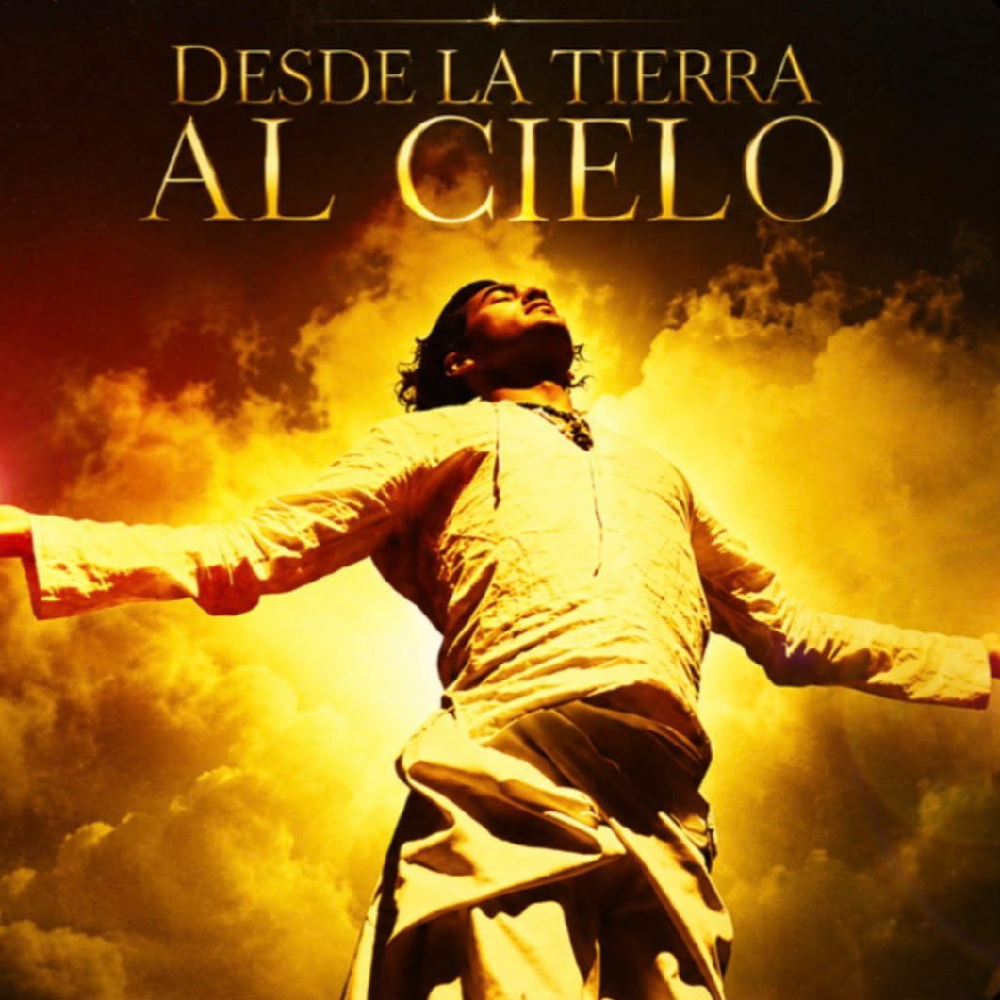

Biografía Oficial & Estilo
Conocé la historia completa, formación, legado familiar, espectáculos y proyectos de vanguardia de Sander Maurín:

Familia
Reyna, Sander & Papá
Sander & PapáOrigen artístico de raza:
Hijo de la gran bailarina acrobática de América, Nélida Palacios, y del reconocido artista multidisciplinario Alejandro Maurín (creador del malambo sobre hielo, showman de Holiday On Ice y autor de más de 20 trucos acrobáticos). Hermano de Reina Reech y Greta Maurín. Padrino de bautismo: Eber Lobato.
Debutó profesionalmente a los 4 años con su familia "El Comandante Maurín y su Familia" en España (Valencia, Madrid, Barcelona) contratados por El Corte Inglés en junio de 1979.
Formación integral multidisciplinaria (1982-1992):
- Canto: Mireya (1982-1987), Mario Galván (1988-1997) y Mariana Grisiglione.
- Danza: Escuela José Neglia (Clásica), Jazz, Hip Hop, Flamenco, Charleston, Rap y Tango con maestros como Alfredo Alaria, Norberto Guichanduc, Alicia Bossi, Carlos Copes y Birulazo.
- Acrobacia y Actuación: Formado por su padre Alejandro Maurín, Tito Tula, José Luis y Jorge Videla (Escuela de Circo en Argentina).
- Modelaje y Composición: Roberto Satragno (1989-2002), dirección escénica, anatomía y pintura.

Sander & Fede Ayos
Reyna MaurínPadre de tres hijas: Carola, Rihanna y la más pequeña, Reyna Maurín. Estuvo en pareja durante 7 años con la actriz Mónica Ayos (siendo figura paterna fundamental de Federico Ayos).
A mediados de 2021 conoce al amor de su vida y compañera artística, Giuliana Valenzuela, a quien impulsó y potenció como la primera Vedette Contorsionista de la Argentina. Unieron sus vidas en dos bodas: matrimonio por Civil en Villa Carlos Paz (21/09/2023) y una Ceremonia Maya de Unión Cósmica en Tulum, México (21/09/2024).
Consolidado en Villa Carlos Paz y en los teatros más emblemáticos de la Calle Corrientes, Mar del Plata y giras internacionales:
- Premios Carlos y Mfalo de Oro (2002): Revelación y mejor espectáculo con "Al fin Solos" en el Teatro del Lago y "Humor, amor y más humor" en Teatro del Sol.
- Fundador de la Marca "Academia de Vedette" (2003): Primera carrera profesional con título nacional e internacional otorgado por IMPI.
- Dúo SANTAN & Maural (2008-2016): Dúo pop latino en castellano e italiano, e incursión en la cumbia cheta y pop tropical con el exitoso proyecto Maural.
- Éxitos recientes: "Evolución Burlesque", "Bravisimo Show", "Circo Smail", "Atentado Fallido" (Nominación a Premios Carlos), "Menories Magic Show" (Ganador Estrella de Conocer 2024), y producciones como "MODO RISA" y "MAGNÍFICO SHOW".
Pionero en Televisión en Realidad Virtual 360° (MS3):
Creador junto a Maxi Di Tata y Seba Geler del primer Canal de Televisión y plataforma streaming interactiva del mundo en Realidad Virtual Aumentada en 360° (www.ms3lanuevatelevision.com), lanzando formatos inéditos e inmersivos.
Actualidad 2025 - 2026:
Gira nacional de celebración "SANDER 50 AÑOS", dirección artística para espectáculos de relieve en Villa Carlos Paz, y constante impulso a lanzamientos discográficos y producciones audiovisuales inmersivas.
Discografía Oficial
Toca cualquier disco para abrir contenido y playlist
Reggaeton a mi manera
2026 • LP
Sander Maurin
2026 • EPSantan
2024 • LP
Desde la tierra al cielo
2024 • SingleBachata
2023 • LPMaural
2023 • EPLos eternos iracundos
2022 • LPSander Mix
2022 • SingleMaural Rock
2021 • LPTítulo del Álbum
Descripción detallada...
Playlist del Álbum
Producciones & Direcciones Artísticas
Toca cualquier título para desplegar la información
Contacto & Booking
Contrataciones y prensa oficial